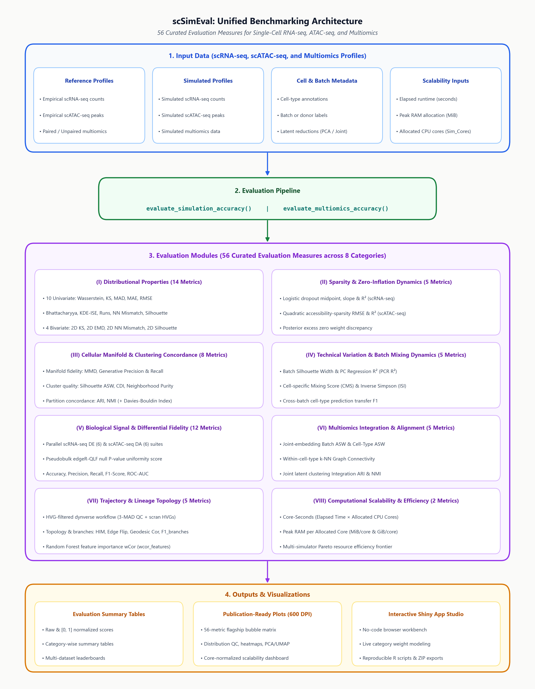

Evaluate Comprehensive Simulation Accuracy (Unimodal Omics Layer)
Source:R/09_evaluate_benchmark.R
evaluate_simulation_accuracy.RdComputes distribution distances, cellular and feature-level properties, zero-inflation curves, and manifold distances between reference and simulated datasets.
Usage
evaluate_simulation_accuracy(
ref_data,
sim_data,
cell_types = NULL,
cell_types_ref = NULL,
cell_types_sim = NULL,
batch_info = NULL,
batch_ref = NULL,
batch_sim = NULL,
modality = NULL,
compute_bivariate = TRUE,
threads = 1,
memory_mb = NULL,
elapsed_time = NULL,
verbose = TRUE,
time_unit = c("seconds", "minutes"),
memory_unit = c("MiB", "MB"),
sim_cores = NULL,
trajectory_num_trees = 10000L,
include_trajectory = TRUE
)Arguments
- ref_data
Reference count matrix (features x cells).
- sim_data
Simulated count matrix (features x cells).
- compute_bivariate
Logical, whether to compute 2D bivariate tests. Default is TRUE.
- threads
Number of threads for parallel computation. Default is 1.
- memory_mb
Optional numeric value of peak memory allocation (in
memory_unit).- elapsed_time
Optional numeric value of wall-clock elapsed time (in
time_unit).- verbose
Logical, whether to print execution messages. Default is TRUE.
- time_unit
Character string specifying the unit of
elapsed_time:"seconds"(default, or"s") or"minutes"(or"min").- memory_unit
Character string specifying the unit of
memory_mb:"MiB"(default, binary mebibytes) or"MB"(decimal megabytes, converted to MiB).- sim_cores
Optional positive integer specifying the number of CPU cores used by the simulator to generate
sim_data. Default is NULL.- trajectory_num_trees
Number of Random Forest trees for Category VII
wcor_features(default10000L, per Saelens et al. 2019).- include_trajectory
Logical; whether to evaluate Category VII trajectory & lineage topology metrics when
modalityis scRNA-seq (automatically skipped forscATAC-seq). Default isTRUE.
Details

Metric Measurement Capacity by Data & Metadata Mode (56 Evaluation Measures Suite):
Count Matrix Alone (No Metadata): Evaluates Category I (Distributional Properties: 10 univariate metrics—Wasserstein, KS, MAD, MAE, RMSE, Bhattacharyya, KDE-ISE, Runs statistic, NN mismatch, Inter-dataset silhouette—and 4 bivariate metrics— Fasano-Franceschini 2D KS, 2D EMD, 2D NN mismatch, 2D Inter-dataset silhouette), Category II (Sparsity & Zero-Inflation Dynamics: logistic dropout curve midpoint/slope/R2 or accessibility-sparsity curve RMSE/R2, and excess zero-inflation weight discrepancy), Category III manifold metrics (MMD, Generative Precision/Recall), and Category VII (Trajectory & Lineage Topology via the HVG-filtered dynverse workflow, evaluated for
scRNA-seqonly and skipped forscATAC-seq: HIM topology similarity, edge flip similarity, geodesic distance correlation, branch assignment F1, and Random Forest feature importance weighted correlation wcor_features).+ Cell Types (Optional): Unlocks Category III subpopulation metrics (Silhouette ASW, CDI, Neighborhood Purity, ARI, NMI, and auxiliary Davies-Bouldin Index).
+ Batch / Biological Replicate Annotations (Optional): Unlocks Category IV (Technical Variation & Batch Mixing Dynamics: Batch Silhouette, PCR R2, CMS score, LISI/ISI, Cross-Batch F1) and Category V (Biological Signal & Differential Fidelity: Libra pseudobulk edgeR-QLF null P-value uniformity, accuracy, precision, recall, F1-score, and ROC-AUC for scRNA-seq DE or scATAC-seq DA).
Full Metadata (+ Runtime & Memory): Unlocks Category VIII scalability tracking (
core_seconds,memory_per_core_mib) for the complete 56-measure suite.
Examples
data(example_scrna, package = "scSimEval")
res <- evaluate_simulation_accuracy(example_scrna$ref, example_scrna$sim)
#> [1/5] Extracting cell-level properties...
#> [2/5] Extracting feature-level properties...
#> [3/5] Computing univariate accuracy metrics...
#> [4/5] Computing bivariate metrics (Fasano-Franceschini, KDE zstat, 2D EMD)...
#> [5/5] Computing zero-probability and manifold distances...
#> Evaluating batch integration & confounder mixing...
#> Evaluating scRNA-seq biological signal fidelity (Libra Pseudobulk edgeR-QLF)...
#> calcNormFactors has been renamed to normLibSizes
#> calcNormFactors has been renamed to normLibSizes
#> [6/7] Evaluating trajectory and lineage topology (HVG + dynverse, scRNA-seq only)...
#> Unimodal accuracy evaluation complete.